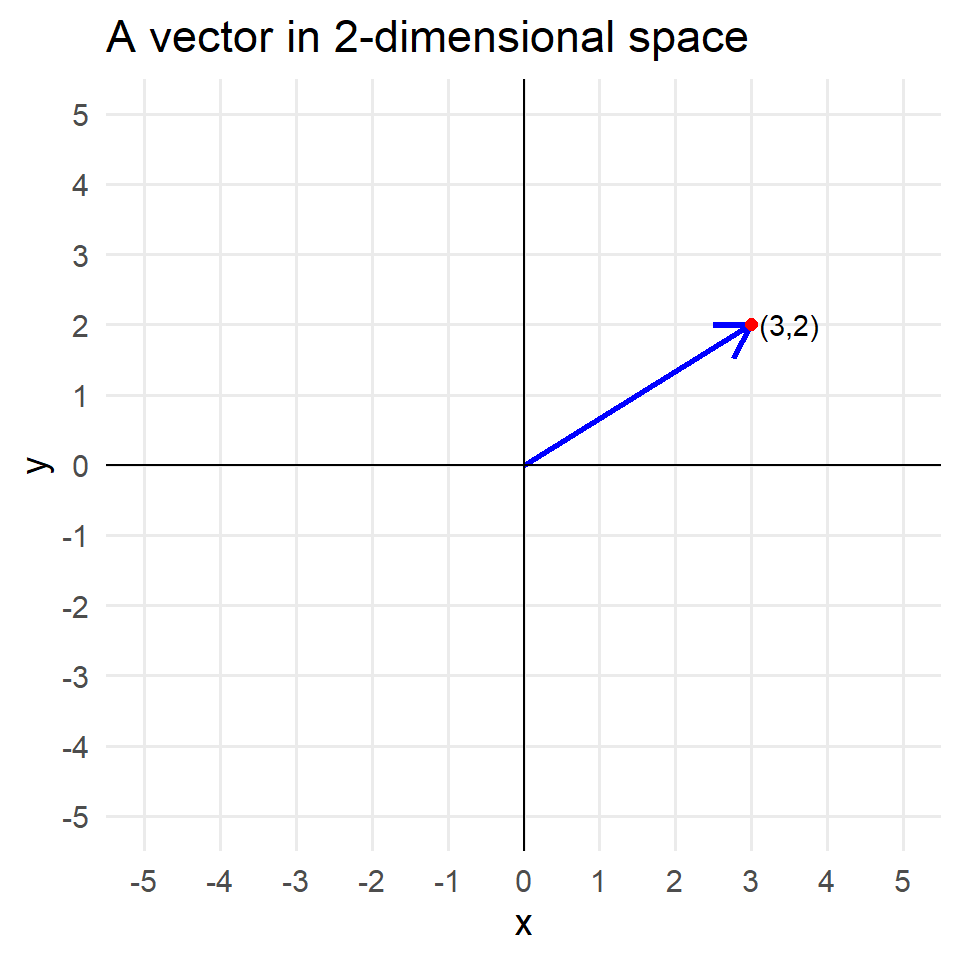
1.1 - data as vectors
What is a vector?
- A \(p\)-vector can be thought of as:
- a coordinate in \(p\)-dimensional space;
- a specification of magnitude and direction in \(p\)-dimensional space
- Vectors can be expressed in row or column format.
- \(u = (3,1)\) is a 2-dimensional row vector
- \(v = \begin{pmatrix}4\\-1\\2\end{pmatrix}\) is a 3-dimensional column vector
What is a vector?
- 2-dimensional vectors are easy to visualize in a Cartesian plane
- For example, consider \(u = (3, 2)\)
Data as vectors
A typical data frame can be thought of as a series of row vectors:
We have \(n\) 2-dimensional vectors:
- The vector (4, 2);
- The vector (4, 10);
- etc.
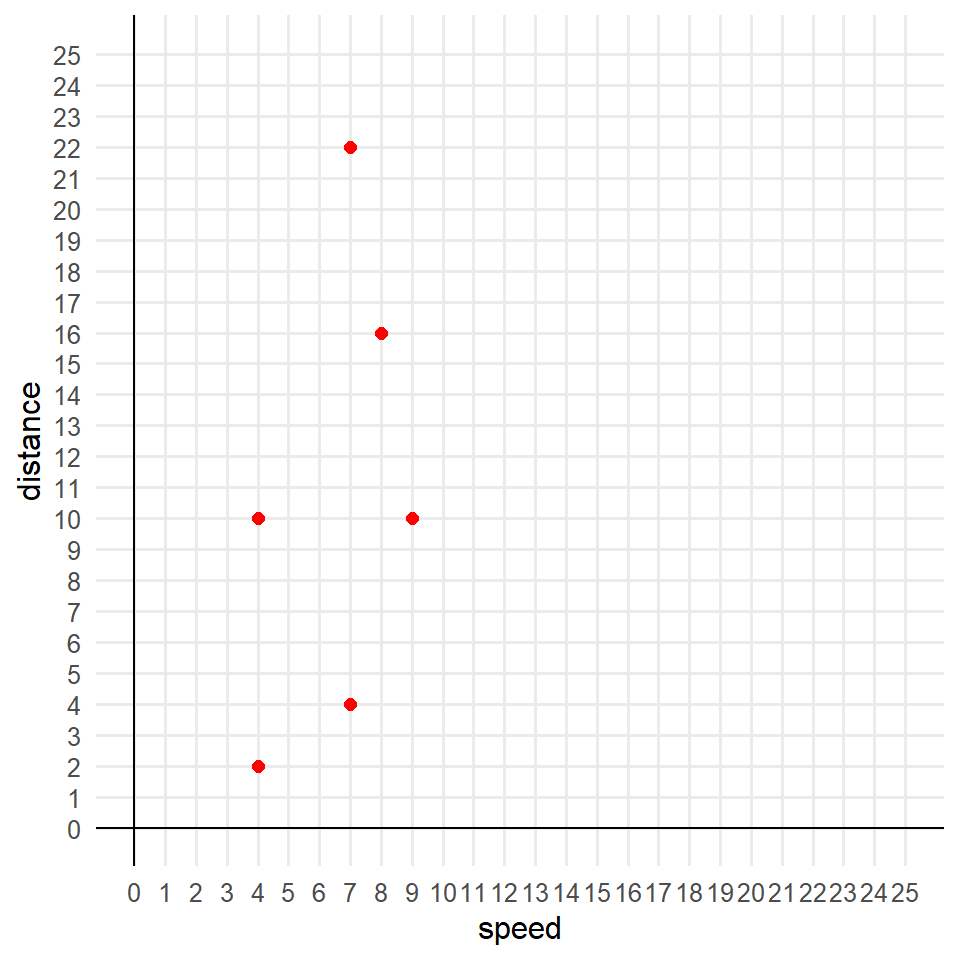
Data as vectors
A typical data frame can be thought of as a series of row vectors:
We have \(n\) 2-dimensional vectors:
- The vector (4, 2);
- The vector (4, 10);
- etc.
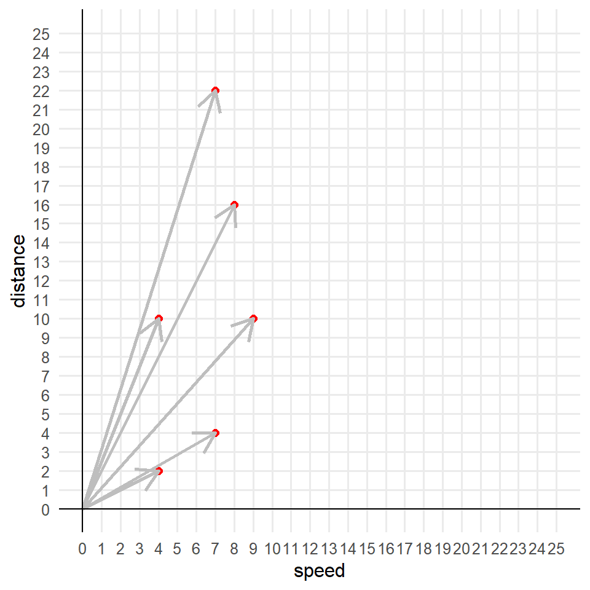
Higher dimensions
- Of course, in practice we have more than 2 columns of data.
- Below is a 3D scatter plot and vector plot of \(n=10\) vectors of \(p=3\) columns:
Can you visualize the data set that would yield these plots?
Scalar multiplication
Multiplying by a scalar \(c\) can affect both magnitude and direction:
- If \(|c|>1\), \(cu\) lengthens the vector
- If \(|c| < 1\), \(cu\) shortens the vector
- If \(c < 0\), \(cu\) reverse the vector
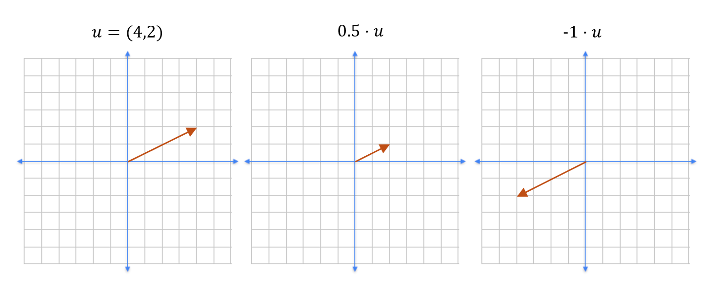
Vector addition
- Adding two vectors is as simple as adding the “steps” in each direction.
- Consider \(u = (3,1)\) and \(v = (1,4)\), then \(u + v = (4,5)\):
Vector subtraction
To subtract vectors, e.g. \(u-v\):
Go in the \(u\) direction;
Stop and go in the negative \(v\) direction
Vector subtraction
Which of these shows \(u-v\)? What is the value of \(u-v\)? Of \(v-u\)?
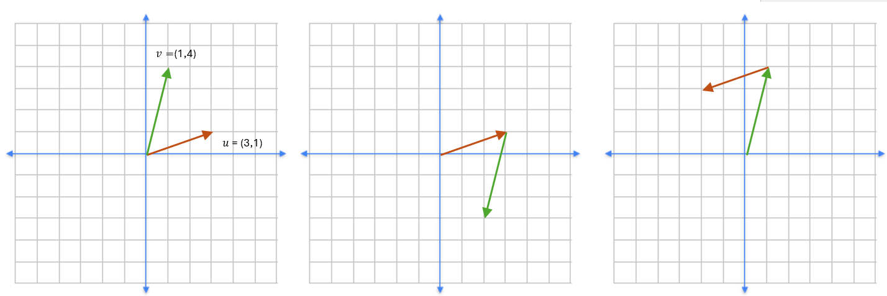Vector norms
An important characteristic of a vector is its norm.
Norm \(\equiv\) size, or length
There are many ways to measure the norm of a vector. Two important measures in data science include:
L1 norm (aka “Taxicab” or “Manhattan”)
L2 norm (aka “Euclidean” norm)
Norms are always \(\geq 0\)!
L1 (“taxicab”) norm example
Consider the vector \(u = (3,2)\):
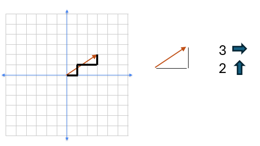\[ ||u||_1 = 5 \]
L1 (“taxicab”) norm example
Now consider \(v = (-4, -5)\):
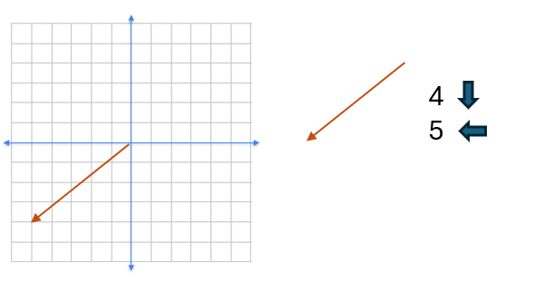\[ ||v||_1 = 9 \]
L1 norm, formally defined
Given a \(p\)-vector \(u = (u_1, u_2, ...,u_p)\):
\[ ||u||_1 = \sum_{i=1}^p |u_i| \]
L2 norm
Taxicabs are inefficient ways of moving from \(A\) to \(B\)!
Recall again \(u = (3,2)\).
Imagine you are a helicopter, you can fly straight from the origin \((0,0)\) to \((3,2)\). How far did you fly?
Pythagorean!
\[ ||u||_2 = \sqrt{3^2 + 2^2} = \sqrt{13} = 3.61 \]
L2 norm of \(v\)
What is the L2 norm of \(v = (-4, -5)\)?
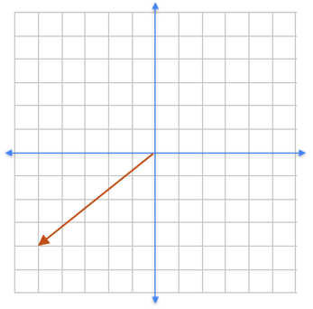L2 norm, formally defined
Given a \(p\)-vector \(u = (u_1, u_2, ...,u_p)\):
\[ ||u||_2 = \sqrt{\sum_{i=1}^p u_i^2} \]
Vectors in R
The following code can be used to create vectors \(u\) and \(v\) from the previous examples, and compute their norms:
Mean vectors
Scaling is an important concept in this class, and one important scaling ingredient is the mean vector.
- Consider the plot of the
carsdata set.
- The complete data set has \(n=50\) rows (i.e., 2-dimensional vectors)
- The red diamond in the middle is the mean vector
- Horizontal coordinate: mean of top density (Speed)
- Vertical coordinate: mean of right density (Stopping distance)

Mean vector formally defined
Given \(n\) \(p-\)dimensional vectors \(u_i\), the mean vector \(m\) is simply:
\[m = \frac{1}{n} \cdot \sum_{i=1}^n u_i\]
Calculating mean vectors in R
There are two ways to find mean vectors in R:
dplyrapproach (allows you to specify which column to average):
- Base
Rapproach (requires all columns to be numeric):
Mean-centering
Subtracting the mean vector from the data yields mean-centered data: all columns have mean 0.
The best way to mean-center columns in
Ris with thescalecommand:scaleboth centers and standardizes (more later); for now we just want centering:

Code for previous plot
# Make the base scatterplot
library(tidyverse)
p <- ggplot(cars_centered, aes(x = speed, y = dist)) +
geom_point(color = "steelblue", size = 3, alpha= .7) +
geom_point(color="red", size = 4, aes(x = 0, y = 0), pch=18) +
geom_hline(aes(yintercept = 0), linetype = 2) +
geom_vline(aes(xintercept = 0), linetype = 2)+
theme_classic(base_size = 18) +
labs(x = "Speed",
y = "Stopping Distance")
# Add marginal density plots
library(ggExtra)
ggMarginal(p, type = "density", fill = "lightblue", alpha = 0.5)Std dev scaling
- After mean centering, dividing by the standard deviation results in \(p-\) vectors that are elementwise mean 0 and standard deviation = 1.
- Important implications for measuring length and (later) distance between vectors.
- Finding standard deviation vectors:
dplyr approach:
Full scaling
The complete scaling can be completed with:
Note the attributes return the mean and standard deviation vectors:
Plot of scaled data
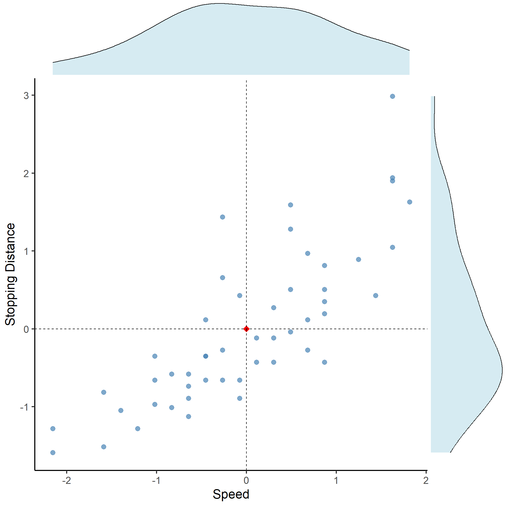Distances between vectors
- We’ve considered the norm (“length”) of a single vector.
- Distance between vectors is an important concept in this class, and is related to vector norms.
- We’ll talk a lot more about distances later; going to consider a more formal vector-based definition now.
Distance visualized
Consider two vectors \(u = (3,1)\) and \(v = (1,4)\):
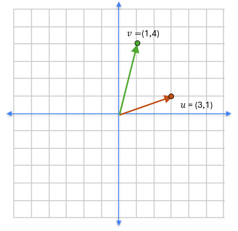Distance visualized
Subtracting \(u\) from \(v\) yields the vector \((-2, 3)\):
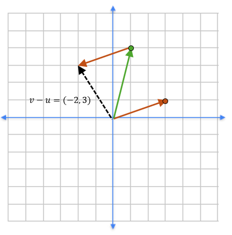Distance visualized
Note that this vector is exactly the right magnitude and direction for traveling from \(u\) to \(v\):
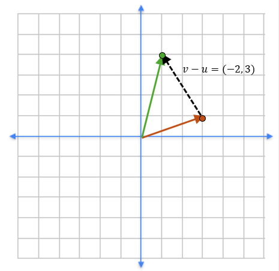Distance defined
We define the distance between vectors\(u\) and \(v\) be the norm (recall: length) of the vector \(u-v\) (or equivalently, the norm of the vector \(v-u\)).
Accordingly, distance can also be defined in L1 (“taxicab” or “Manhattan”) or L2 (“Euclidean”) form.
\[ ||u-v||_1 = \sum_{i=1}^p |u_i -v_i| \]
\[ ||u-v||_2 = \sqrt{\sum_{i=1}^p (u_i -v_i)^2} \]
Calculating distance for example
- L1 distance: \(|3-1| + |1-4| = 5\)
- L2 distance: \(\sqrt{(3-1)^2 + (1-4)^2} = \sqrt{13} = 3.61\)
Air pollution data
Consider the USairpollution data set from the HSAUR2 package:
SO2 temp manu popul wind precip predays
Albany 46 47.6 44 116 8.8 33.36 135
Albuquerque 11 56.8 46 244 8.9 7.77 58
Atlanta 24 61.5 368 497 9.1 48.34 115
Baltimore 47 55.0 625 905 9.6 41.31 111
Buffalo 11 47.1 391 463 12.4 36.11 166
Charleston 31 55.2 35 71 6.5 40.75 148Air pollution data
Pairs plots are useful ways of visualizing multidimensional data. The ggpairs function from GGally produces:
The dist function
- The
dist()function can be used to compute distances between \(n\) vectors of \(p\) dimensions, arranged in 1-row-per-p-vector data frames. - By default,
method = 'euclidean'(L2 distances); see?distfor other options. - The following code all pairwise distances between 41 cities in the
USairpollutiondata set from theHSAUR2package:
By default, a distance matrix is lower-triangular. First 6 rows:
Wrangling the dist object
- The following code wrangles the
distobject:
library(HSAUR2)
data("USairpollution")
distance_df <- (pollution_dist
1 %>% as.matrix
) - 1
-
Converge
distobject to a matrix
Wrangling the dist object
- The following code wrangles the
distobject:
Wrangling the dist object
- The following code wrangles the
distobject:
Wrangling the dist object
- The following code wrangles the
distobject:
library(HSAUR2)
data("USairpollution")
distance_df <- (pollution_dist
1 %>% as.matrix
2 %>% data.frame
3 %>% mutate(CityA = rownames(.))
%>% pivot_longer(cols = -CityA,
names_to = 'CityB',
4 values_to = 'Distance')
) - 1
-
Converge
distobject to a matrix - 2
- Convert \(p \times p\) matrix to a data frame
- 3
- Create new column moving the rownames to an actual variable
- 4
- Pivot the data
Result
We’re primed to play!